|
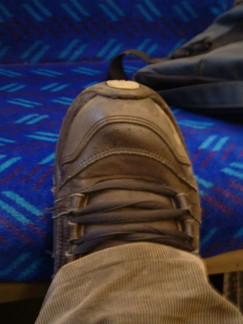 2 years on ish. first to post the original photo in the book wins a prize. 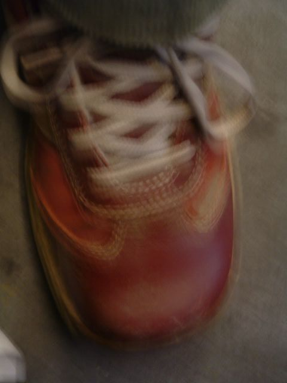 Little red shoes A sea of green corduroy These pictures were taken on a trip to the British Museum in Janary. Becky loves the British museum as you can see here but not as much as the natural history museum - no sharks. 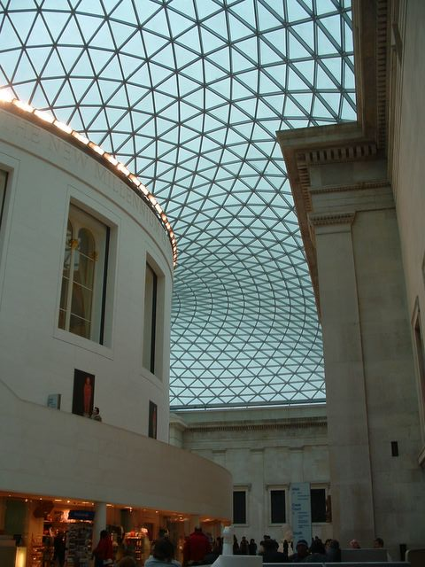 The roof is amazing 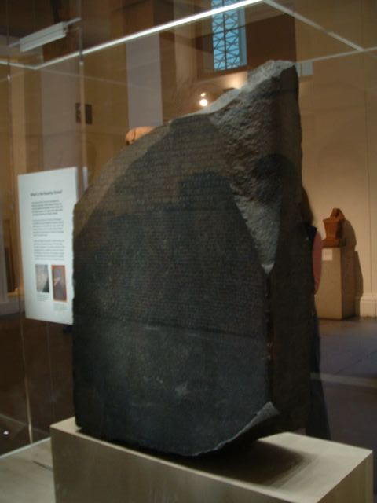 This is the rosetta stone 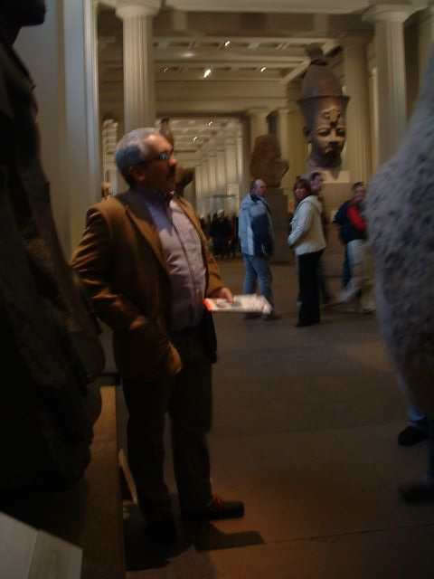 This was our guide. I can't remember his name but he was a cool guy. 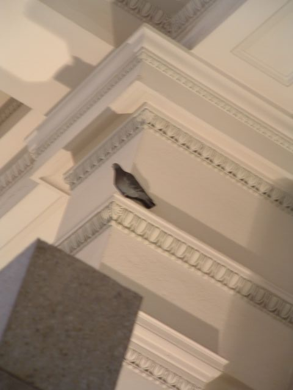 You get pigeons in the British Museum 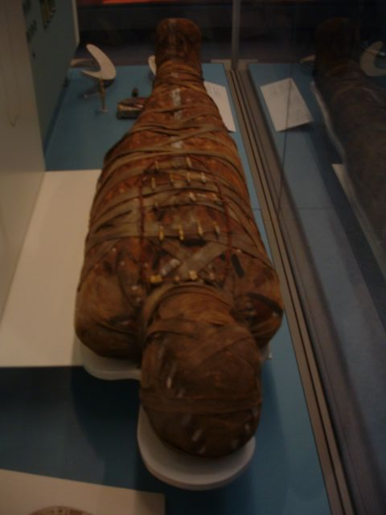 There is a person in there. A dead one from a long time ago. 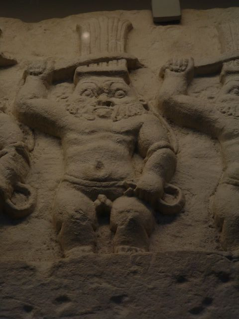 I thought this was funny 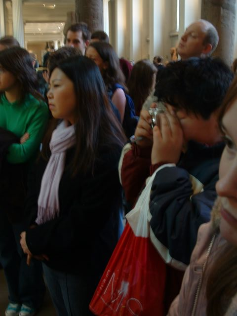 And this was funnier. A fat japanese boy taking a picture of the above. 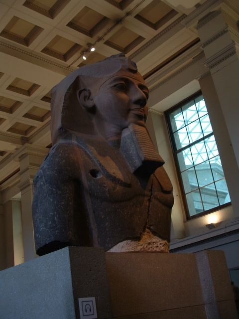 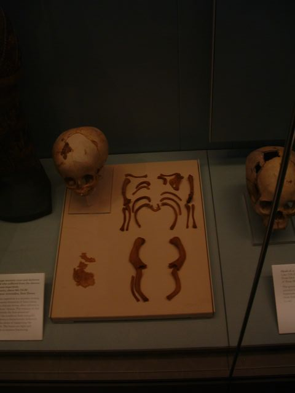 Dead people are fascinating 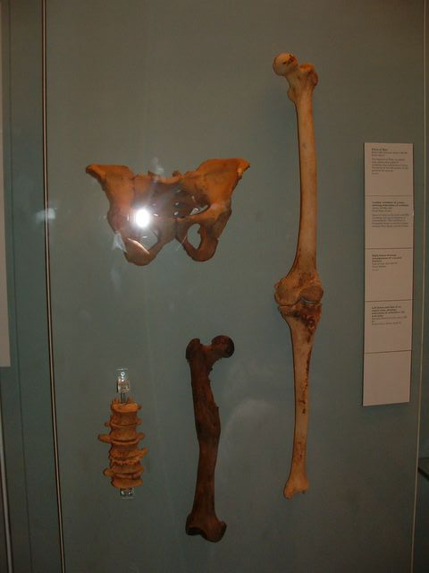 |
|
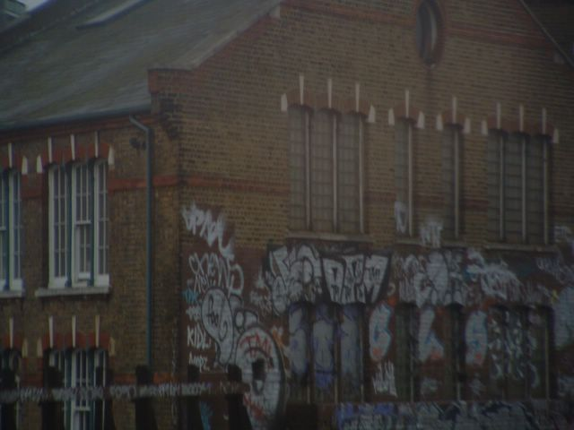 I like taking pictures of graffiti from the train. I want to see some of Tom's graffiti. The roof of the British Museum 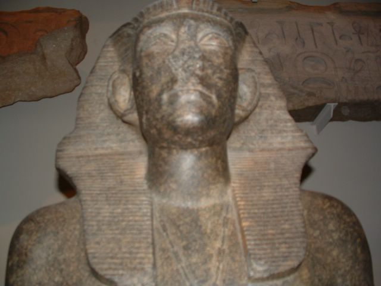 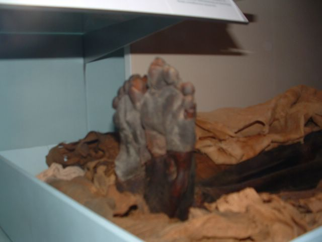 A dead old woman's feet. 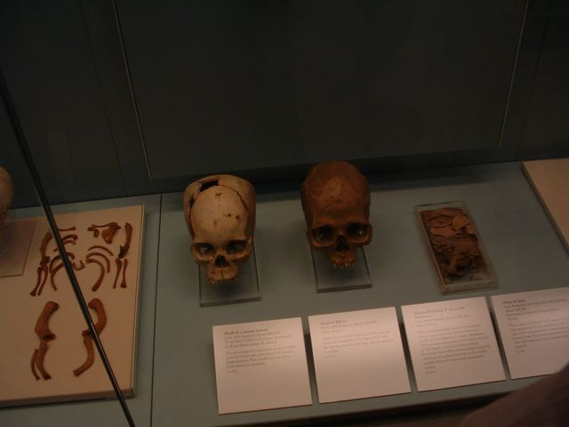 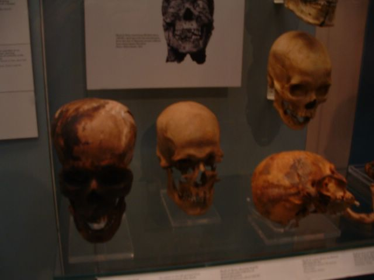 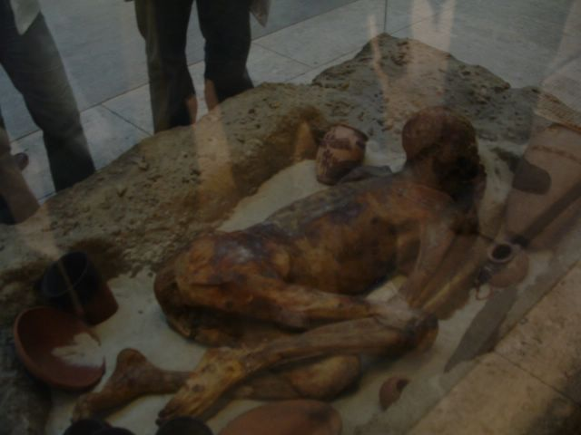 This was amazing. You could see the guys hair and stuff. 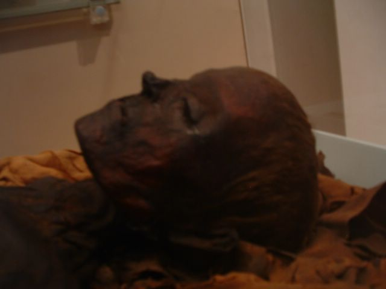 Can you see the hiar? 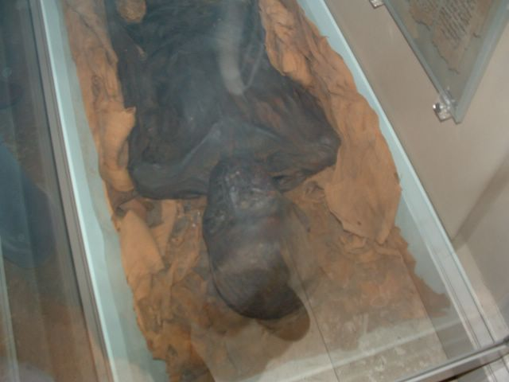 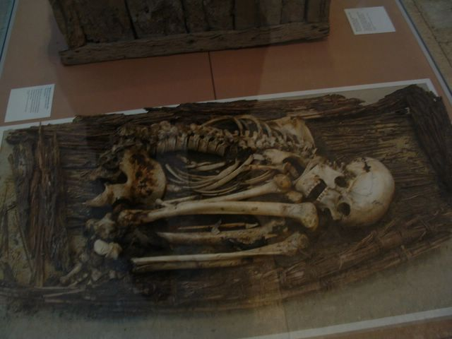 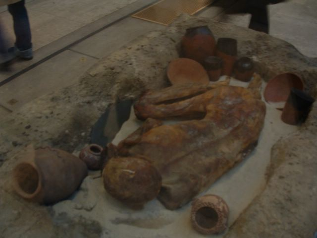 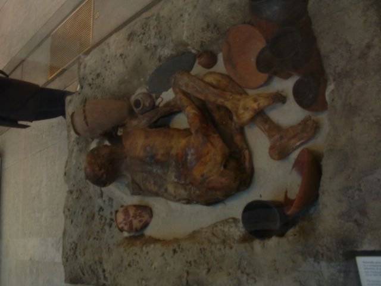 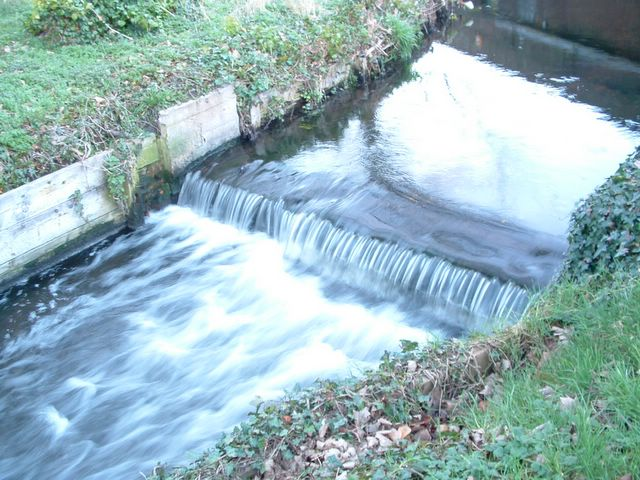 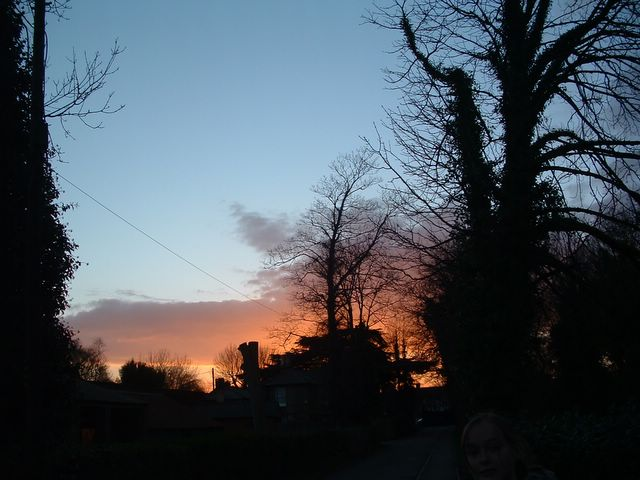 |